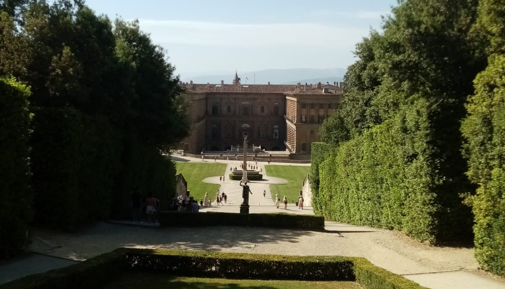

Giardini toscani
Alla fine del XIV secolo e per tutto il XV secolo, l'Europa fu pervasa da un trasalimento di gioia. Le persone iniziarono a guardare il mondo con occhi nuovi. Il mondo sembrava un enorme cantiere. L'antichità venne riscoperta.
Ma gli uomini non guardavano solo al passato. Guardavano anche al futuro con un tale fervore da cambiare le dimensioni dell'universo. Di lì a poco Cristoforo Colombo avrebbe scoperto il Nuovo Mondo; Magellano avrebbe dimostrato che la terra era rotonda navigando intorno ad essa. Vasco da Gama avrebbe aperto la rotta verso l'India. Galileo avrebbe cambiato la struttura del cosmo facendo orbitare la Terra intorno al Sole. Tutto sembrava nuovo, vivo e ringiovanito. Era il Rinascimento.
È difficile immaginare oggi quanto le menti fossero inebriate dalla ricerca e dalla scoperta. Tanto più che la Scienza avanzava in mezzo a un corteo di Muse. Non aveva ancora il viso accigliato quale lo vediamo oggi. Ancora giovane e sorridente, avanzava, coronata di rose, sulla scia della primavera. In una parola, la gioia di vivere stava sbocciando ovunque.
Leonardo da Vinci scrisse nei suoi taccuini: "L'amore di qualunche cosa e filiuola d'essa cognizione." Questo potrebbe essere il motto di Firenze. Conoscenza! Dominava tutto, guidava tutto, illuminava tutto. Non solo ha dotato l'uomo di poteri infinitamente superiori a quelli che possedeva prima. Lo ha anche condotto alla comprensione e, attraverso la comprensione, alla consapevolezza del Bello, del Vero e del Bene, che Platone affermava essere il fine supremo dell'attività dell'uomo.
Fu allora che Cosimo de Medici, detto il Vecchio (1389-1464) e suo nipote Lorenzo, detto il Magnifico (1449-1492), decisero di costruire giardini intorno a Firenze dove questo nuovo ideale avrebbe trovato piena espressione. Questi giardini avrebbero lo scopo di glorificare la spiritualizzazione dell'uomo attraverso i suoi sforzi per raggiungere l'universalità.
Lorenzo voleva che il suo giardino fosse un capolavoro pubblico, capace di servire la gloria di Firenze, la città di cui progettava di fare una delle più grandi metropoli dell'Occidente. Nella mente di Lorenzo non c'era altro che rimodellare la valle dell'Arno in tutte le sue parti, per creare un giardino che il mondo non aveva mai visto prima.
L'Arno aveva quattro piccoli affluenti. Il progetto prevedeva di ridisegnare i loro letti, di fiancheggiarli con balaustre e di farli sfociare nel fiume attraverso quattro cascate che passavano attraverso altrettanti archi trionfali, sormontati da trofei e gruppi allegorici che rappresentavano le quattro stagioni dell'anno e le quattro età della vita.
In seguito, le due sponde sarebbero state sistemate e i pendii livellati per creare quattro terrazze sovrapposte, collegate da scale monumentali. Queste terrazze dovevano avere un significato simbolico, come indicavano i loro nomi: erano la Terrazza degli Eroi, la Terrazza dei Filosofi, la Terrazza dei Santi e la Terrazza delle Virtù. Ciascuna delle terrazze doveva essere decorata con statue i cui soggetti avrebbero illustrato il particolare ruolo loro assegnato.
Sulla prima, sarebbero state erette le effigi dei più illustri eroi dell'antichità: Achille, Patroclo, Aiace, Teseo, Pericle, Alessandro, Enea, Romolo, Scipione l'Africano, Cesare... I colloqui dovrebbero essere incentrati sulle imprese degli eroi antichi. Si commenterebbero Omero e Virgilio, Tito Livio o Plutarco, confrontando l'ardore di Achille e la pietà di Enea, la magnanimità di Ettore e la tenacia di Scipione. A questi colloqui seguirebbero lunghe discussioni sul significato profondo della loro vita e su come trasmetterne al meglio la lezione ai giovani, affinché diventino a loro volta nuovi Pericle, nuovi Alessandro.
Sulla seconda, sarebbero esposti i ritratti dei più grandi pensatori della Grecia e di Roma: Pitagora, Eraclito, Socrate, Platone, Aristotele, Diogene, Epicuro, Marco Aurelio... I vari sistemi con cui i più grandi filosofi avevano cercato di fornire una regola morale agli uomini sarebbero stati messi a confronto. L'Etica di Aristotele verrebbe posta in contrasto con il Manuale di Epitteto, i Pensieri di Marco Aurelio con i Dialoghi di Platone.
Sulla terza si vedrebbero i santi più venerabili della cristianità: San Pietro, San Paolo, San Giovanni, Sant'Atanasio, San Girolamo, San Lorenzo, Sant'Agostino, San Benedetto, San Gregorio Magno.
Infine, sulla quarta, che sarebbe stata anche la più alta, ci sarebbero state statue allegoriche che rappresentavano le quattro virtù cardinali: Forza, Temperanza, Prudenza e Giustizia, alle quali Lorenzo il Magnifico aveva aggiunto Tenacia, Audacia e Onore.
Ogni terrazza doveva avere il suo "livello" e questo livello avrebbe corrisposto a un "ordine" di pensiero. Più si salirebbe, più l'ordine diventerebbe alto. Ciò avverrebbe fino alla terrazza più alta, quella delle virtù, dove sarebbero ammessi solo gli artisti e gli studiosi le cui conoscenze e opere supererebbero quelle degli altri. Per gli uomini del Rinascimento, infatti, nulla era più degno di essere immortalato che aver portato al mondo un po' più di conoscenza o un po' più di bellezza. Così Firenze diventerebbe davvero una nuova Atene...
Il giardino, che doveva fornire agli uomini un'immagine tangibile dell'ideale platonico, rimase sotto forma di bozza. I suoi basamenti, che cominciavano appena a emergere dal terreno, furono distrutti da Michelangelo nel 1539, quando fu incaricato di difendere la Signoria dagli assalti delle truppe di Papa Clemente VII. Non vennero mai ricostruiti. In seguito, i posti che dovevano essere riservati a loro sono stati coperti dai successivi ampliamenti della città.
Di questo superbo progetto, nato dal genio mediceo, rimasero a lungo solo alcuni schizzi marmorizzati di macchie brune, sepolti negli archivi del Palazzo Vecchio. D'Annunzio ne aveva menzionato l'esistenza e l'interesse nel 1927. Da allora, queste scatole sono scomparse a loro volta, inghiottite dalle devastazioni della Seconda Guerra Mondiale, tanto che oggi non ne rimane nulla.